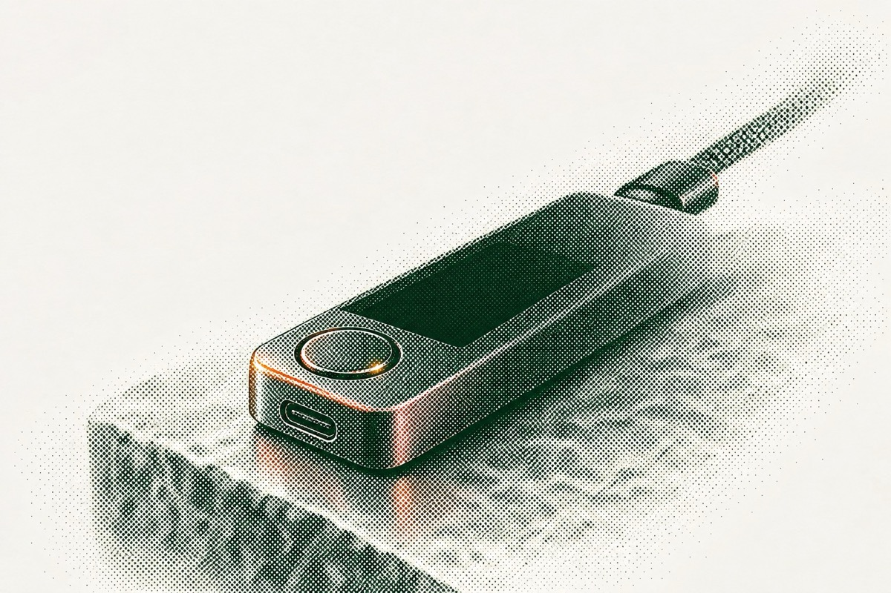

Foundations
Logo
The logo is the diamond mark with the SecondLane wordmark, supplied as one SVG (assets/logo.svg, 128 × 32 viewBox). Use it as a single colour: linen on green, green on linen or sand.
Clear space
Keep at least half the logo height free on every side (16px at the 32px nav size).
Sizes
Nav: 128 × 32px. Footer: 112 × 28px. Minimum: 96px wide on screen. Never set it smaller than the body text.
Implementation
Inline the SVG or use it as a CSS mask so the colour follows a token. Give the link aria-label="SecondLane home".
Don't
Colour
Eleven colours, agreed in Round 3 (Option C, Warm earth): two grounds and a signal yellow, two supporting neutrals, and six warm earth colours for data. There are no other colours and no extra shades. Components use role tokens, never raw hex values.
Core
--color-green · #12301FRGB 18 48 31Primary ground: hero, nav, footer, most sections, cards. Text on linen.
--color-linen · #F5F3EFRGB 245 243 239Ground for light sections. Text on green.
--color-yellow · #E3FD5ARGB 227 253 90Signal: primary buttons, eyebrows and arrows on green. In charts, SecondLane only.
Support
--color-sand · #CBBFA8RGB 203 191 168Secondary text on green, footer. Raised cards on linen (at 30%). "Other" in charts.
--color-moss · #7A8462RGB 122 132 98Card edges, placeholders and disabled text. Large text and icons only.
linen 18% · green 14%rgba(245,243,239,.18) · rgba(18,48,31,.14)Hairlines on green and on linen. Transparency, not a new colour.
Data and charts
Series 1 to 6, in this order on both themes; light and dark alternate so neighbouring bars stay apart. SL Yellow marks SecondLane's own figure and nothing else; sand is "Other". Outside charts these colours appear only as small accents.
--color-clay · #DE8582RGB 222 133 130Chart series 1. Error text on green.
--color-terracotta · #A14E2BRGB 161 78 43Chart series 2. Eyebrows and error text on linen.
--color-amber · #ECAC5FRGB 236 172 95Chart series 3. Warning text on green.
--color-bronze · #77581CRGB 119 88 28Chart series 4. Warning text on linen.
--color-ochre · #E9D574RGB 233 213 116Chart series 5.
--color-olive · #6F8433RGB 111 132 51Chart series 6. Success icons.
How we use colour
1 · Components use role tokens
Write var(--bg) or bg-bg, never #12301F or bg-green. Role tokens switch with the section theme, so one component works on green and on linen.
2 · Eleven colours, nothing else
No new hex values and no lighter or darker shades. When something needs a softer version of a colour (a line, a tint, a raised panel), use the colour with transparency: rgb(18 48 31 / .14), bg-green/15.
3 · Core, support, data
Green and linen are the grounds, yellow is the signal. Sand and moss support them. The six warm earth colours are for data; elsewhere they are small accents only (eyebrows, status messages, a detail in a photograph).
4 · Pairing rule
Text on green: linen, yellow, ochre, sand, amber or clay. Text on linen: green, bronze or terracotta (or green at 72–80% for secondary text). Moss and olive are for icons, borders and large text only.
5 · Yellow stays a signal
Main button, active underline, eyebrows and arrows on green. Hover is a 4px glow ring, not a lighter yellow. Never text on linen, never inside photography. In charts, SecondLane only.
6 · Terracotta on light, clay on green
Eyebrows and error text on linen are terracotta. On green, errors are clay. Warnings are amber on green and bronze on linen.
Role tokens
Set data-theme="green" or "linen" on each section. Green is the default.
| Role token | Green theme | Linen theme | Use |
|---|---|---|---|
--bg | green | linen | Section background |
--bg-raised | linen 5% | sand 30% | Panels and cards that sit on the background |
--bg-inverse | linen | green | A block in the opposite theme |
--fg | linen | green | Headings and body text |
--fg-lead | linen 85% | green 80% | Standfirsts and lead paragraphs |
--fg-muted | sand | green 72% | Secondary text, captions, footer links |
--fg-subtle | moss | moss | Placeholders and disabled text (large text only) |
--eyebrow | yellow | terracotta | Uppercase labels above titles |
--accent | yellow | yellow | Primary button fill, active underline |
--on-accent | green | green | Text and icons on the accent |
--accent-glow | yellow 16% | green 14% | 4px ring: primary button hover |
--action | linen | green | Secondary solid button fill |
--on-action | green | linen | Text on the secondary solid button |
--action-glow | linen 16% | green 14% | 4px ring: secondary button hover |
--arrow | yellow | green | Arrow-link icon |
--focus | yellow | green | Focus outline (2px, 3px offset) |
--field-bg | linen | linen | Input fill |
--field-border | green 60% | green 60% | Input border (3:1 against the fill and the ground) |
--focus-field | green | green | Input border when focused, with --focus-ring |
--focus-ring | yellow 45% | green 14% | 4px ring around focused inputs |
--danger | clay | terracotta | Error text, icons and field border |
--danger-bg | clay 14% | terracotta 8% | Error message background |
--success | olive | olive | Success icons and borders (message text stays --fg) |
--success-bg | olive 20% | olive 12% | Success message background |
--warning | amber | bronze | Warning text and icons |
--warning-bg | amber 14% | amber 20% | Warning message background |
--border | linen 18% | green 14% | Hairlines and dividers |
--border-strong | linen 60% | green 60% | Outline button border |
--border-card | moss 60% | green 12% | Card edge |
--scrim | green 88% | green 88% | Sticky nav once scrolled |
--glass | green 55% | green 55% | Glass panel fill (with 24px blur) |
Chart tokens: --chart-1 … --chart-6 (clay, terracotta, amber, bronze, ochre, olive), --chart-brand (SL Yellow), --chart-other (sand). The same on both themes.
Interaction states
| State | Value | Where |
|---|---|---|
| Yellow hover | same yellow + 0 0 0 4px rgba(227,253,90,.16) | Primary button hover |
| Pressed | moves 1px down, ring drops | Every button |
| Green hover | same green + 0 0 0 4px rgba(18,48,31,.14) | Green button hover |
| Focus (inputs) | border green + 0 0 0 4px ring (yellow 45% on green, green 14% on linen) | Text fields |
| Error | terracotta #A14E2B on linen · clay #DE8582 on green | Field errors |
| Card edge | moss at 60% on green · green at 12% on linen | Card border |
Proportion
Roughly how much of each colour a page uses. Dark pages (the default) lead with green; light pages invert green and linen. Yellow stays under 3% and the warm accents under 2% in both.
Dark · green-led
Light · linen-led
The thin bands are sand and moss (support), yellow (signal) and the warm earth accents. On light pages yellow appears only as button fills, never as text or eyebrows; eyebrows switch to terracotta and arrows to green.
Section themes
Each section sets data-theme; the theme swaps a few variables and every component reads from them.
--fg linen · --fg-muted sand · eyebrow yellow--fg green · eyebrow terracottaContrast (WCAG 2.2)
AA needs 4.5:1 for body text and 3:1 for large text, icons and borders. Yellow, ochre, sand, amber and clay never carry text on linen; terracotta and bronze never carry text on green.
Typography
Two families. Ashcroft, a serif, for headlines and large figures. SFT Schrifted Sans for body, labels, buttons and UI.
Display · headlines, figures
Text · body, UI, labels
Licensing: the prototype uses trial files of both fonts, which are for review only. Production needs web licences for Ashcroft and SFT Schrifted Sans, served as WOFF2 with font-display: swap. The client should buy the licences before launch; until then use the fallback stacks below.
| Token | Stack |
|---|---|
--serif | 'Ashcroft', 'Iowan Old Style', Georgia, serif |
--sans | 'SFT Schrifted Sans', 'Helvetica Neue', Helvetica, Arial, sans-serif |
Type scale
Desktop sizes at 1440px; the phone size applies below 900px. Line height is unitless; letter spacing is in em.
Phone 44 · Capital, Prime
Phone 36
Phone 34
Phone 28 · FAQ 32 → 24
Phone 24
Phone 48
Phone 16
Phone 16
- Sentence case for every heading and button.
- Balance headline lines (
text-wrap: balance). - Keep body lines between 50 and 75 characters.
- Use tabular figures in tables and stats.
- Set body copy in Ashcroft or headlines in the sans.
- Use bold weights above 500, italics or underlines for emphasis.
- Use all caps outside eyebrows and field labels.
- Track headlines positively.
Layout and spacing
One centred container, a 12-column grid inside it and generous vertical rhythm. Every section sits on the same left and right edges.
Container and grid
| Property | Desktop | Below 900px |
|---|---|---|
| Container max width | 1312px (1184px of content) | Full width |
| Side padding | 64px | 20px |
| Columns / gutter | 12 / 24px | 4 / 16px |
| Section padding (vertical) | 136px | 88px |
| Section head to content | 72px | 40px |
| Section head | Title 6 cols, standfirst 5 cols, bottom aligned, 72px apart | Stacked |
| Nav height | 96px, 76px once scrolled | 64px |
Common layouts
| Pattern | Columns | Used for |
|---|---|---|
| Three cards | 3 × 4 cols | Verticals, insights, LP advantages |
| Four tiles | 4 × 3 cols | Team, Prime founder blocks |
| Split | 5 + 7 cols | Text beside an image or panel |
| Stats band | 3 equal glass cards | 2013 · 17,000+ · 1,500+ |
| Footer | 5 + 2 + 2 + 2 cols | Brand line and three link columns |
Spacing scale
Use only these steps (px). Small steps space components internally; large steps separate blocks and sections.
481216243244567288136Radius and elevation
| Token | Value | Used for |
|---|---|---|
--radius-sm | 4px | Buttons, inputs, tags |
--radius-md | 8px | Cards, image frames |
--radius-lg | 12px | Glass panels (stats, waitlist form) |
--shadow-lift | 0 27px 67px rgba(0,0,0,.45) | Card hover only. Nothing has a shadow at rest. |
--glass | fill rgba(18,48,31,.55), blur(24px), 1px line at 20%, inner top highlight 12% | Panels over the dot field or photos |
Breakpoints: 900px switches to the phone layout, 1180px moves the company directory's sidebar above the list. Phone layouts are not designed yet: they follow once the desktop layouts and components are approved. Until then, stack columns in reading order at 900px.
Imagery
Two approved styles, both from Round 6: editorial photography of people together in elevated spaces, and halftone objects for the sectors SecondLane covers. Plus one generated pattern, the dot field.
Photography


- People together: a conversation, a meeting, two people walking and talking. SecondLane is about introductions.
- The people, the architecture and the light make the picture together: stairs, halls, glass, travertine, bronze, walnut.
- Low warm sun from one side, long shadows, deep green shade. Sharp tailoring in wool, camel and charcoal.
- One small warm accent in every image: a terracotta knit, scarf or leather folder.
- Faces in soft profile, turned away or partly in shadow; nobody looks at the camera.
- Details and furniture with no people or context: a watch on a desk, a cup on a table, a vase on a plinth.
- Literal business scenes: a laptop as the subject, handing over a pen, handshakes, charts on screens, piles of cash.
- Generic open-plan offices or staged stock photography.
- Filters, heavy grading, neon or yellow light.
Halftone objects



- One object per image from a SecondLane sector: AI, crypto, fintech, consumer tech, gaming, space, deep tech, autonomy, defense, energy.
- Dark version: object on
#12301Fwith a soft dot halo that fades out, never an opaque glow. Light version: object alone on#F5F3EF. - One small terracotta or bronze accent per image. No yellow or neon inside images: yellow belongs to the interface.
Dot field
| Property | Value |
|---|---|
| Ground | #12301F, drawn on a <canvas> at up to 2× device pixel ratio |
| Grid | 9px cell, dot centred in each cell |
| Dot at rest | radius 1.05px, rgba(227,253,90,.22) |
| Near the pointer | within 220px, smoothstep falloff f: radius 1.05 × (1 + f), alpha .22 + .5 × f |
| Pointer easing | follows at 0.12 per frame; fades in at 0.08, out at 0.03 |
| Performance | draw only while on screen (IntersectionObserver); static at rest under reduced motion |
Image ratios
Serve images as AVIF or WebP with a JPEG fallback through srcset, lazy-load everything below the first screen, and give each image meaningful alt text (empty alt="" for decorative halftones). The images in the prototype are placeholders; final art is produced per page.
Motion
Slow and soft: things settle rather than snap. Motion only responds to the visitor or reveals content once. Hover a row to play it.
cubic-bezier(.2,.7,.2,1)--ease: cubic-bezier(.65,0,.35,1)- Animate
transformandopacityonly. - Honour
prefers-reduced-motion: no lifts, rises or moving dots; everything visible at once. - Keep content readable if scripts fail: hidden-until-revealed content must default to visible.
- Parallax, auto-playing carousels, tilt or bouncing easings.
- Zoom images on hover.
- Loop anything for more than 5 seconds without a pause control.